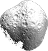
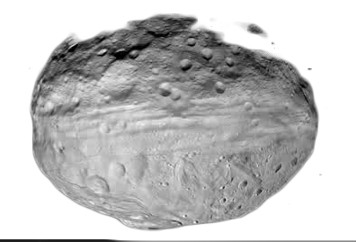
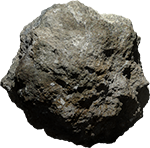
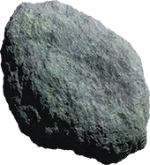

to move
to move
 to fire
to fire
to pause
to move
to fire
to pause
Congrats !
You've got a score of {{score}}
/* Hide heroes that are not currently transitioning */
polyfill-next-selector { content: ':host > [animate]:not(.core-selected) [hero]'; }
::content > [animate]:not(.core-selected) /deep/ [hero] {
opacity: 0;
}
polyfill-next-selector { content: ':host > .core-selected[animate] [hero]'; }
::content > .core-selected[animate] /deep/ [hero] {
opacity: 1;
z-index: 10000;
}
polyfill-next-selector { content: ':host > * [hero-p]'; }
::content > * /deep/ [hero-p] {
-webkit-transition: box-shadow 100ms ease-out;
transition: box-shadow 100ms ease-out;
}
polyfill-next-selector { content: ':host > [animate] [hero-p]'; }
::content > [animate] /deep/ [hero-p] {
box-shadow: none !important;
}
polyfill-next-selector { content: ':host > * [cross-fade]'; }
::content > * /deep/ [cross-fade] {
-webkit-transition: opacity {{g.transitions.xfadeDuration || g.transitions.duration}} cubic-bezier(0.4, 0, 0.2, 1);
transition: opacity {{g.transitions.xfadeDuration || g.transitions.duration}} cubic-bezier(0.4, 0, 0.2, 1);
}
polyfill-next-selector { content: ':host > * [cross-fade][bg]'; }
::content > * /deep/ [cross-fade][bg] {
-webkit-transition: background-color {{g.transitions.xfadeDuration || g.transitions.duration}} cubic-bezier(0.4, 0, 0.2, 1);
transition: background-color {{g.transitions.xfadeDuration || g.transitions.duration}} cubic-bezier(0.4, 0, 0.2, 1);
}
polyfill-next-selector { content: ':host > * [cross-fade][hero-p]'; }
::content > * /deep/ [cross-fade][hero-p] {
-webkit-transition: background-color {{g.transitions.xfadeDuration || g.transitions.duration}} cubic-bezier(0.4, 0, 0.2, 1);
transition: background-color {{g.transitions.xfadeDuration || g.transitions.duration}} cubic-bezier(0.4, 0, 0.2, 1);
}
polyfill-next-selector { content: ':host > .core-selected [cross-fade]'; }
::content > .core-selected /deep/ [cross-fade] {
opacity: 1;
}
polyfill-next-selector { content: ':host > [animate]:not(.core-selected) [cross-fade]:not([hero-p]):not([bg])'; }
::content > [animate]:not(.core-selected) /deep/ [cross-fade]:not([hero-p]):not([bg]) {
opacity: 0;
}
polyfill-next-selector { content: ':host > [animate]:not(.core-selected) [cross-fade][bg]'; }
::content > [animate]:not(.core-selected) /deep/ [cross-fade][bg] {
background-color: rgba(0, 0, 0, 0);
}
polyfill-next-selector { content: ':host > [animate]:not(.core-selected) [cross-fade][hero-p]'; }
::content > [animate]:not(.core-selected) /deep/ [cross-fade][hero-p] {
background-color: rgba(0, 0, 0, 0);
}
polyfill-next-selector { content: ':host > * [cross-fade-delayed]'; }
::content > * /deep/ [cross-fade-delayed] {
-webkit-transition: opacity {{g.transitions.xfadeDuration || g.transitions.duration}} ease-out;
transition: opacity {{g.transitions.xfadeDuration || g.transitions.duration}} ease-out;
}
polyfill-next-selector { content: ':host > .core-selected [cross-fade-delayed]'; }
::content > .core-selected /deep/ [cross-fade-delayed] {
-webkit-transition: opacity {{g.transitions.xfadeDuration || g.transitions.duration}} ease-out {{g.transitions.xfadeDelay || g.transitions.xfadeDuration || g.transitions.duration}};
transition: opacity {{g.transitions.xfadeDuration || g.transitions.duration}} ease-out {{g.transitions.xfadeDelay || g.transitions.xfadeDuration || g.transitions.duration}};
}
polyfill-next-selector { content: ':host > [animate]:not(.core-selected) [cross-fade-delayed]'; }
::content > [animate]:not(.core-selected) /deep/ [cross-fade-delayed] {
opacity: 0;
}
polyfill-next-selector { content: ':host > .core-selected [cross-fade-delayed]'; }
::content > .core-selected /deep/ [cross-fade-delayed] {
opacity: 1;
}
/* cross-fade-all: cross fade everything except for heroes and their parents */
polyfill-next-selector { content: ':host(.cross-fade-all) > * *:not([hero]):not([hero-p]):not([cross-fade])'; }
:host(.cross-fade-all) ::content > * /deep/ *:not([hero]):not([hero-p]):not([cross-fade]) {
-webkit-transition: opacity {{g.transitions.xfadeDuration || g.transitions.duration}} ease-out;
transition: opacity {{g.transitions.xfadeDuration || g.transitions.duration}} ease-out;
}
polyfill-next-selector { content: ':host(.cross-fade-all) > [animate]:not(.core-selected) *:not([hero]):not([hero-p]):not([cross-fade])'; }
:host(.cross-fade-all) ::content > [animate]:not(.core-selected) /deep/ *:not([hero]):not([hero-p]):not([cross-fade]) {
opacity: 0;
}
polyfill-next-selector { content: ':host(.cross-fade-all) > .core-selected *:not([hero])'; }
.host(.cross-fade-all) ::content > .core-selected /deep/ * {
opacity: 1;
}
/* Only background-color is allowed for the hero's parents, no opacity transitions */
polyfill-next-selector { content: ':host(.cross-fade-all) > * [hero-p]'; }
:host(.cross-fade-all) ::content > * /deep/ [hero-p] {
-webkit-transition: background-color {{g.transitions.xfadeDuration || g.transitions.duration}} ease-out;
transition: background-color {{g.transitions.xfadeDuration || g.transitions.duration}} ease-out;
opacity: 1;
}
polyfill-next-selector { content: ':host(.cross-fade-all) > [animate]:not(.core-selected) [hero-p]'; }
:host(.cross-fade-all) ::content > [animate]:not(.core-selected) /deep/ [hero-p] {
background-color: rgba(0, 0, 0, 0);
}
polyfill-next-selector { content: ':host(.slide-from-right) > *'; }
:host(.slide-from-right) ::content > * {
-webkit-transition: -webkit-transform {{g.transitions.slideDuration || g.transitions.duration}} cubic-bezier(0.4, 0, 0.2, 1);
transition: transform {{g.transitions.slideDuration || g.transitions.duration}} cubic-bezier(0.4, 0, 0.2, 1);
}
polyfill-next-selector { content: ':host(.slide-from-right) > .core-selected ~ [animate]:not(.core-selected)'; }
:host(.slide-from-right) ::content > .core-selected ~ [animate]:not(.core-selected) {
-webkit-transform: translateX(100%);
transform: translateX(100%);
}
polyfill-next-selector { content: ':host(.slide-from-right) > [animate]:not(.core-selected)'; }
:host(.slide-from-right) ::content > [animate]:not(.core-selected) {
-webkit-transform: translateX(-100%);
transform: translateX(-100%);
}
polyfill-next-selector { content: ':host(.slide-from-right) > .core-selected'; }
:host(.slide-from-right) ::content > .core-selected {
-webkit-transform: none;
transform: none;
}




